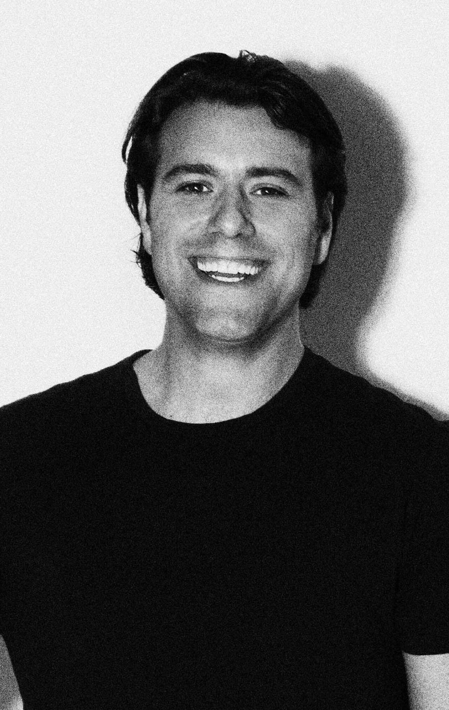

Sebastian Ingrosso will be here for Sensation 'Ocean of White'


.jpg){kind=link}
Over the weekend ITM revealed Sensation would be returning to Melbourne this New Years Eve (read about it here), this time with the same ‘Ocean of White’ theme that’s played to more than 250,000 punters across Europe in the past 12 months; and we can now lift the lid on the first artist who’s been confirmed for the show. Swedish House Mafioso Sebastian Ingrosso will be on deck to provide the tunes, with ID&T cheekily hinting he might be bringing a few of his “friends” along for the ride.
The news was confirmed by Irfan van Ewijk (the ‘I’ in ID&T) during a chat with ITM earlier this week, where he spoke on what we can expect from the party. Even more spectacle than we saw at the first event, apparently. “We’re grown even more experienced in setting up a show that surprises, and creates ‘wow’ moments,” Irfan told ITM, claiming we can expect a true ‘underwater ambience’ in the stadium. “This year it will be even more stunning… it’s in the numbers. This show will cost 50 per cent more than what we invested in the show last year.”
Irfan also hinted at an artist lineup for Sensation that will keep everybody happy. “It will be very house orientated, but we’re here to please as many people as possible, not only with the music but offering to them a great night out. And I don’t expect too many complaints.”
Stay tuned to ITM for all the Sensation news as it comes to hand. Ticketing info is due in the coming weeks, and don’t forget to check out our Festival Page for all the Sensation info you could possibly need.